Eight original scenes go out of Blender as X3D, come back into a fresh Blender, and leave again as GLB and OpenUSD. IFC and USD come in the other way. Every intermediate file is on this page, and every number below names the tool that produced it.
Formats enter on the left, Blender is the editable centre, X3D is the accountable publication format. Dashed lines are prepared but not executed in this release.
Cycles posters of the Blender source scenes (render settings in each poster-receipt.json). Click a card to open that chapter live in X_ITE.
PBR gyroscope, nested hierarchy, sampled animation, click sensors and a camera tour.
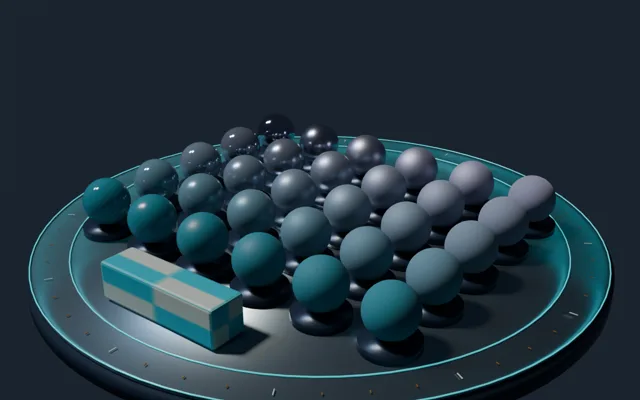
Thirty metallic and roughness pairs, glass, emission and a UV calibration texture.
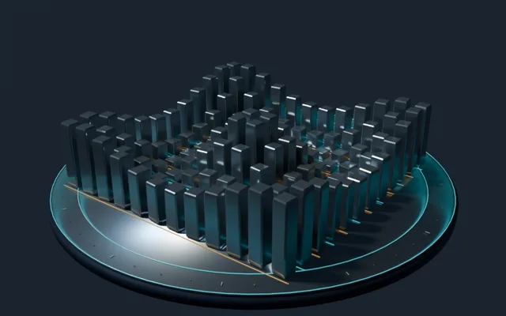
144 linked modules exported as real DEF/USE: 143 geometry USEs, 65 coordinate definitions instead of 208.
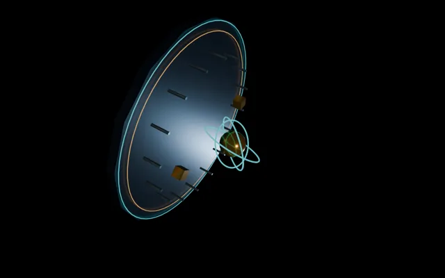
Independently authored X3D: one animated node used twice under different parents, editable in Blender.
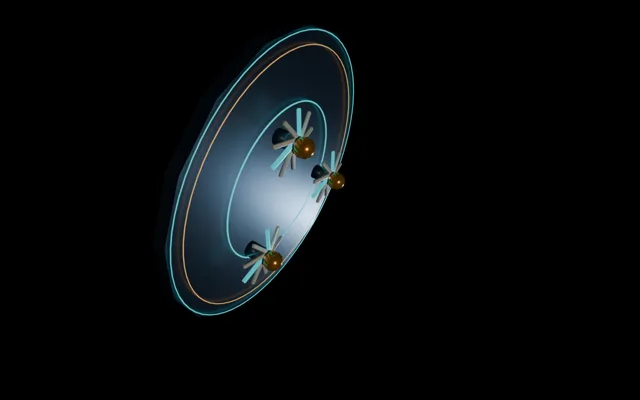
One generated turbine GLB referenced three times through X3D Inline and rebuilt by the hub.
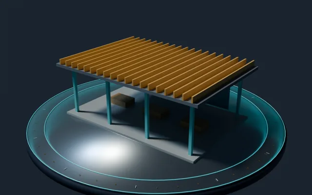
Synthetic IFC4 elements tessellated to meshes; GlobalId, class and carbon data ride along as metadata.
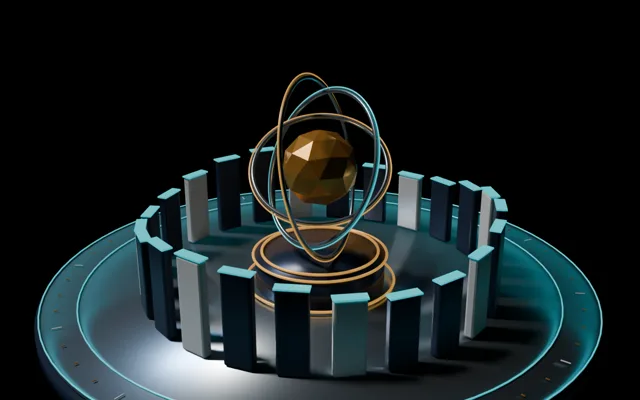
A real USD export reopened by Blender and published as X3D, and back out to USD.
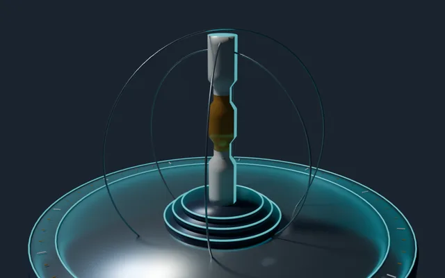
A three-joint weighted limb as HAnimHumanoid 2.0, returning as an editable armature. Partial rig, no LOA claim.
Our own frames, not the release's: headless Chromium 157.0.8103.78, SwiftShader software GL (no GPU), X_ITE 16.7.1 as vendored, 1440×900. Load times 4.2 to 36.7 s per chapter on that rig are software-rendering times, not a speed claim.
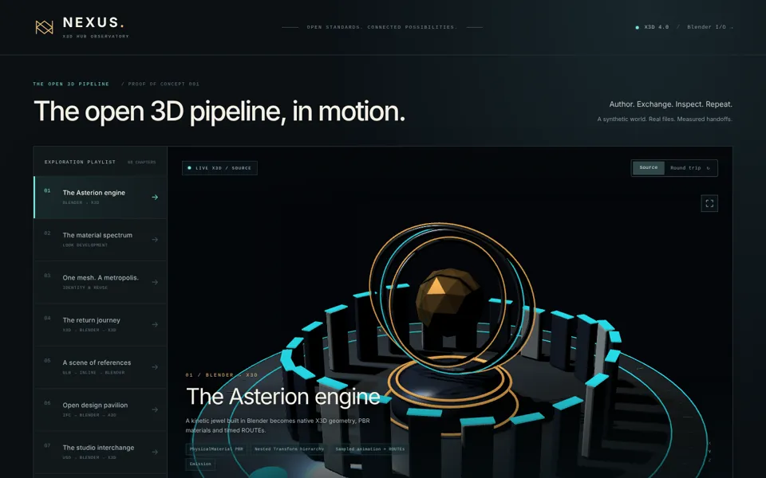
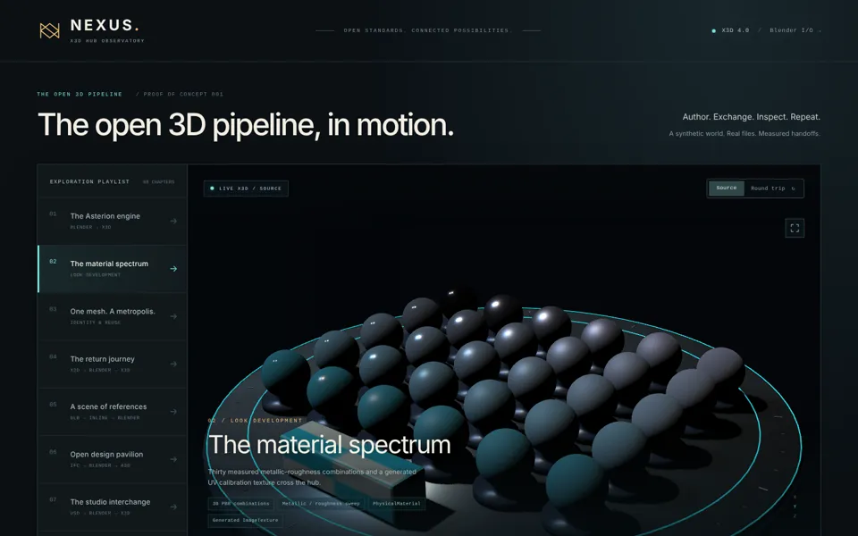
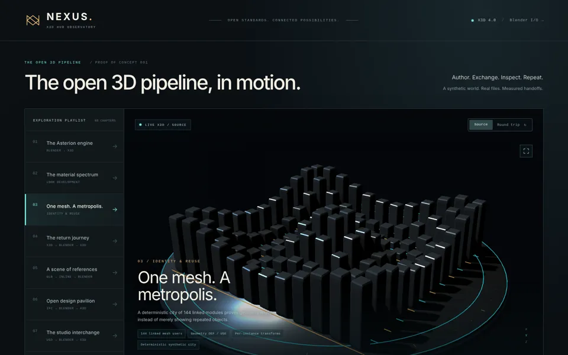
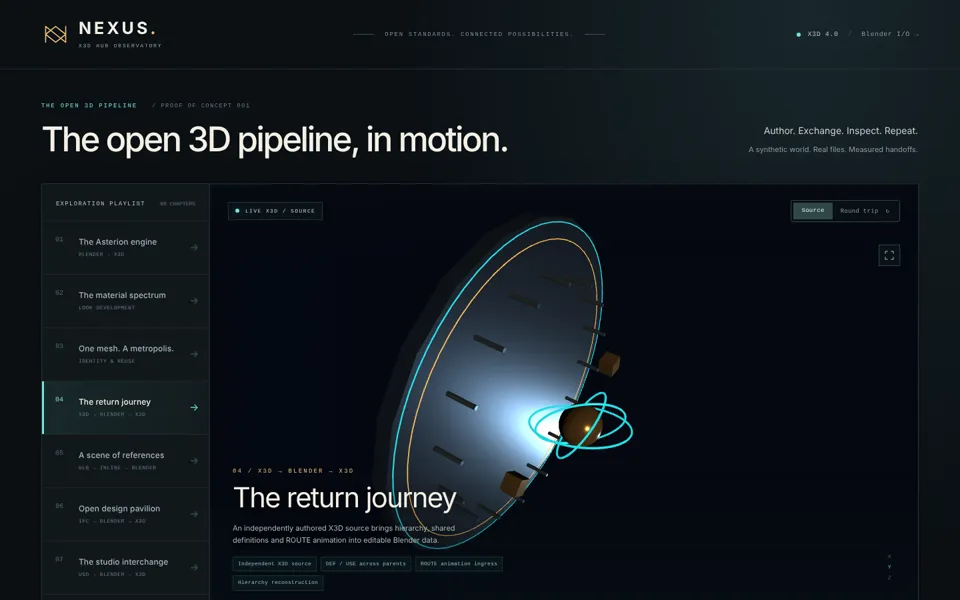
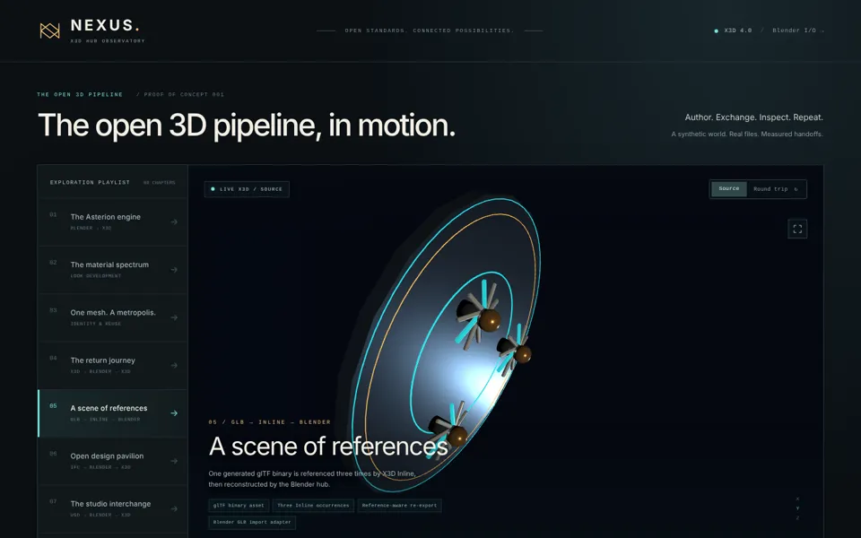
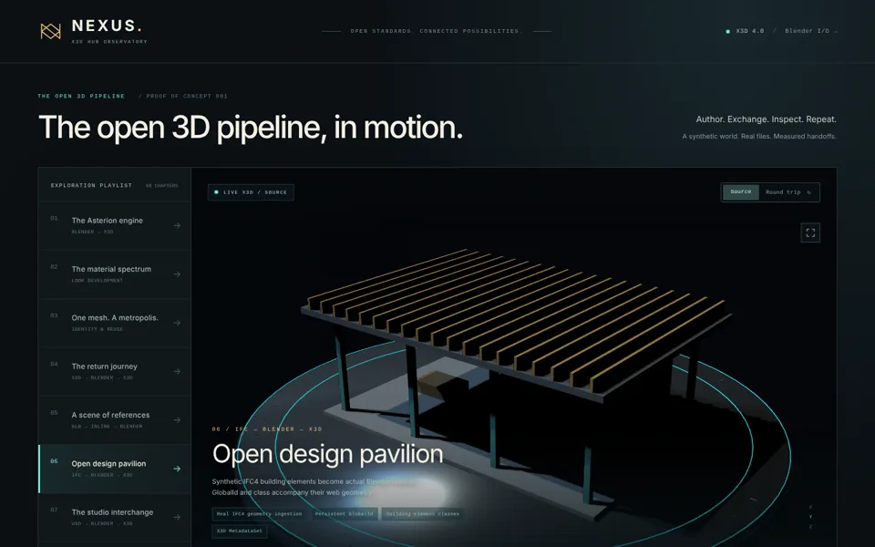
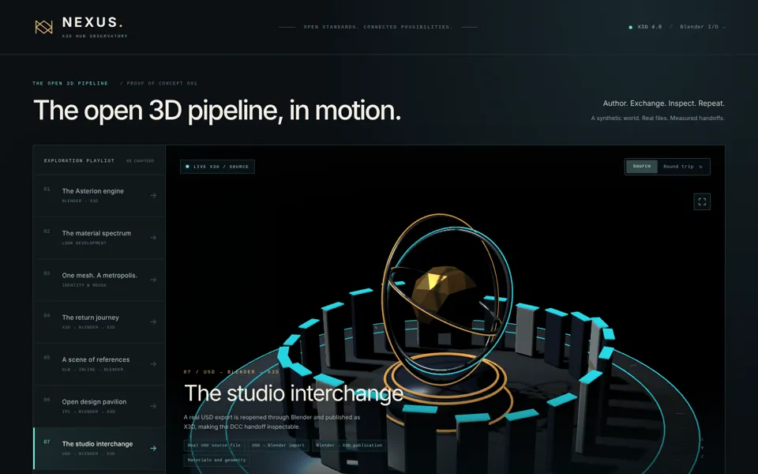
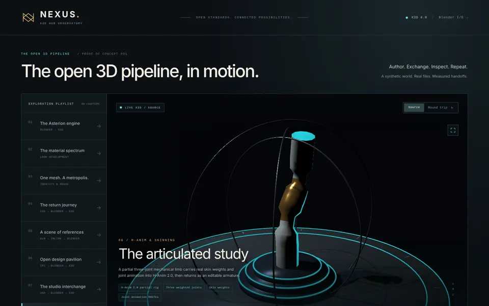
"X3D is the 3D format an AI can be held accountable to." So we checked the release before bragging about it. Grades: Confirmed we re-ran it, Likely strong evidence, not proven. Full log: RECHECK.json.
| Check | Tool | Result | Grade |
|---|---|---|---|
| Release integrity | sha256sum -c checksums.txt | 304 of 304 files match | Confirmed |
| X3D 4.0 XSD | x3d_mcp 39c6e94 validate_xml | 19 of 20 valid. hanim/scene.x3d fails: name="Articulation study" on HAnimHumanoid is not an NMTOKEN. Round trip already writes Articulation_study. | Confirmed |
| Why the release said 0 errors | Web3D x3d.py 4.0.65.8 adapter | The field adapter does not check NMTOKEN, so a second validator caught what the first missed. | Confirmed |
| Add-on fix | bpy 5.3.0 unittest | emit_x3d40 now writes HAnim name values as NMTOKENs (spaces → _); DEF names unchanged. New test fails before, passes after; suite 910 OK, 48 skipped. | Confirmed |
| Semantic lint | x3d_mcp 39c6e94 validate_semantic | bim: MetadataSet name="IFC identity" flagged (style rule; the XSD allows it). usd: one empty Transform. Info-level unused DEFs elsewhere. | Confirmed |
| Browser | Playwright · Chromium 157 · SwiftShader | 8 of 8 chapters load, 0 console errors | Confirmed |
| Chapters 04 and 05 look tilted | X_ITE StraightenHorizon on / off | The authored source cameras carry a roll that X_ITE's StraightenHorizon hides. After Blender the camera sits under a rotated Transform, so the roll shows. Geometry is preserved. Fix belongs in the fixture's camera, not in the add-on. | Likely |
| Leak sweep | grep + zstd-decompressed .blend | No keys, emails or private links. Only generic build paths (/home/agent, /workspace/scratch). | Confirmed |
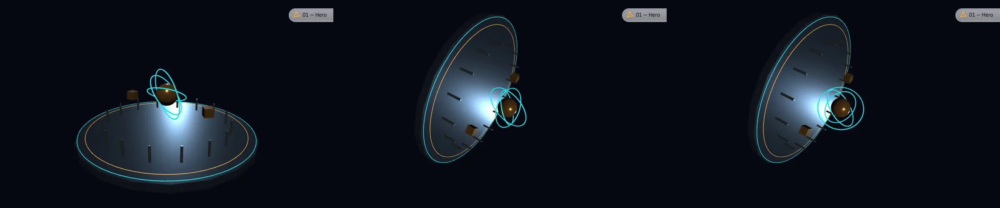
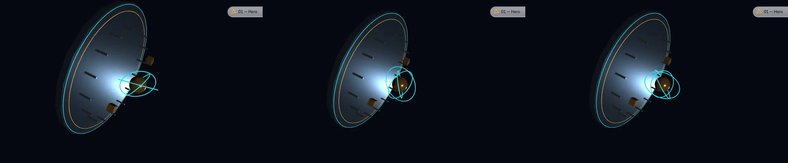
These come from the release's own evidence files and are shown as reported: motion matrices (3.25e-5), HAnim millimetre bounds, Khronos glTF and OpenUSD validation, IFC tessellation. Not tested anywhere yet: a real GPU, Castle or X3DOM, the Unreal and Bonsai editors.
| What | Where |
|---|---|
| The add-on used to build everything (2.6.4, commit cc4864c) | x3d_blender_io-2.6.4-cc4864c.zip |
| Per chapter: scene.blend, scene.x3d, imported.blend, roundtrip.x3d, scene/hub .glb and .usda, evidence JSON | observatory/assets/<chapter>/ (also in the observatory's evidence panel) |
| Release README, evidence, checksums, build-recipe patch, licences | release/ · RELEASE-EVIDENCE.json · source patch |
| Our re-check | RECHECK.json · x3d_mcp validation |